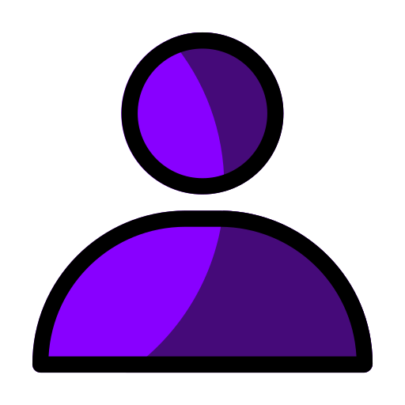

Bem-vindo(a) !
Empresa:
Empresa:
INFORMAÇÕES
CPU: ao clicar no botão irá aparecer um gráfico representando últimos dados capturados referente a CPU da máquina selecionada.
RAM: ao clicar no botão irá aparecer um gráfico representando últimos dados capturados referente a RAM da máquina selecionada.
DISCO: ao clicar no botão irá aparecer um gráfico representando últimos dados capturados referente ao DISCO da máquina selecionada.